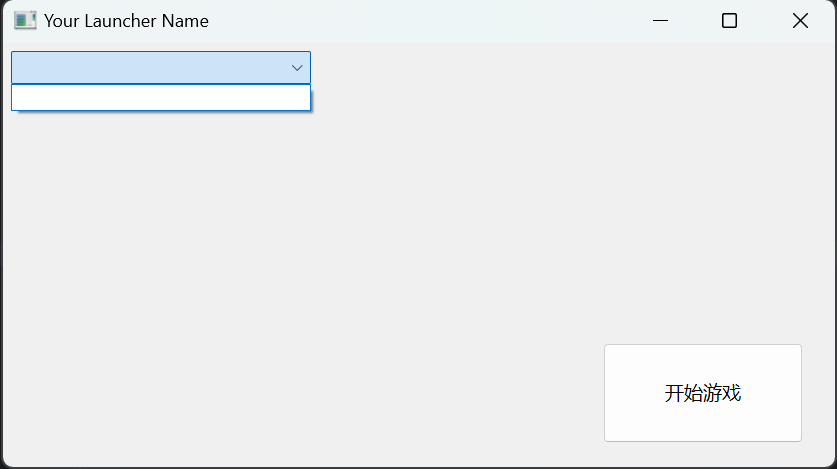

提示：从此章开始，我们将正式开始敲代码。
如何获取MC的版本文件夹呢？我们这一章节主要是和大家说这个。
首先，我们目前使用的为纯VCL制作启动器，也就是说窗体的优化由大家自己考虑，我在此只说逻辑。
我们在窗口中置下这么几个框：

这个将作为我们程序启动时的窗口。其中，左上角我们置一个ComboBox下拉框，右下角我们置一个Button按钮。然后按钮的Caption我们定义成启动游戏字样。
然后，我们现在要做的，就是在启动器的代码部分里置几个常量，分别作为我们MC启动必须参数，参数分别如下：
const //提示，这里需要根据玩家的需要自己填入。
JavaPath = '<你的Java路径【精确到javaw】>'; //由于Delphi里面没有用\格式化输出，因此各位可以尽情的只输一个\即可，无需输入两个\来格式化
MinecraftPath = '<你的Minecraft根路径>'; //末尾不用输入\符号
MaxMemory = '<最大内存>';
UserName = '<玩家名称——离线>'; //后期会做微软登录的
VersionType = '<版本类型——启动MC后显示在左下角的类型>'; //就是这里，启动器一般会给予玩家一个自定义信息进行输入。
Wt = '<窗口宽度>'; //可选
Ht = '<窗口高度>'; //可选
这个常量代码添加的位置在单元文件开头implementation上方，var Form1的上方，type class的下方部位顶头添加即可。当然，如果你想做输入框进行输入也可以哦！
知道为什么我要写常量而不是写输入框吗？因为我为了节省本文的篇幅，这些输入路径、内存就交给玩家自己处理了。这些常量供我们后期启动游戏时使用。
然后，我们回到窗体视图，双击窗体进入FormCreate事件。我们要在主窗体显示之前将【<-MinecraftPath->\versions\】下的所有文件夹名称全部读取进列表框里。
记住，我所说的双击窗体进入的事件指的是窗体刚被创建时的事件，此时所有的控件都已经生成完毕了。大家如果用的类似Python这种非可视化GUI编程的语言，一定要记住先创建控件之后，再在窗体显示之前执行一次FormCreate窗体创建事件即可。
- ps：说实话，做这步操作只需要一点点扫描文件夹的编程知识即可完成，但我依旧还是得和大家说明一下。
然后，我们在FormCreate里面输入这一串代码，具体内容我会有注释
procedure TForm1.FormCreate(Sender: TObject);
var
Files: TArray<String>; //在方法开头建立一个数组类型的变量。
begin
var MinecraftVersionPath := MinecraftPath + '\versions'; //获取完整的MinecraftPath\versions路径
Files := TDirectory.GetDirectories(MinecraftVersionPath); //给这个数组类型的数据添加进versions下所有文件的绝对路径。
for var I in Files do //使用for-each循环，遍历数组内的内容。
ComboBox1.Items.Add(ExtractFileName(I)); //在下拉框的元素Item中依次添加进【使用ExtractFileName】后的文件名称。
end;
我们只需要将MinecraftPath填入清楚，即可。记住，在Delphi里面，使用TDirectory.GetDirectories('文件夹路径')时，给数组变量添加的是所有文件夹的绝对路径哦！
如果我们使用TDirectory.GetFiles，则是获取所有文件的绝对路径。这就是区别。
ExtractFileName的意思就是获取文件名，例如我有个文件是这样的【E:\example\exam.txt】，那么用这个函数则可以获取到【exam.txt】，类似的还有ExtractFileDir和ExtractFilePath，分别可以获取上述文件中的以下字符串【E:\example】【E:\example\】，简单来说，Dir函数最后面没有右划号，而Path函数有。具体情况的还是看你程序后期是否需要以文件路径去拼接另外一个字符串。从而得到另一个文件路径。
哦，对了，如果你们将这串代码直接复制粘贴到代码文件中，可能会发生报错。如果报错了，我们只需要在单元开头部分的uses底下，引用一个单元文件，即可使用TDirectory代码：
uses
IOUtils;
我这里简写了，当然，在你们那里，你们不可以删掉原来就有的所有引用的单元文件。只需要在逗号后面输入上面的单元文件即可导入。
然后，此时此刻，大家应该就能看到了，我们成功的导入了Minecraft所有文件夹。
各位完全可以使用适合自己的编程语言来写这一串逻辑哦。其实这一串逻辑在Delphi里面非常简单，主要是我之前也很少用C#、Java这种语言进行文件操作，基本上用的都是Delphi语言，因此，我不是很清楚各位使用别的编程语言时遇到了什么困难。大家只需要照着我代码的逻辑编写即可！